A tymczasem w Cameracie...
.
2012-01-07
Jutro koncert jubileuszowy. Orkiestra stroi się w auli.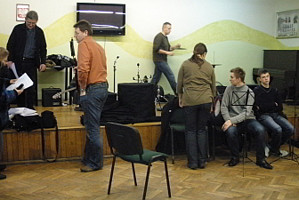 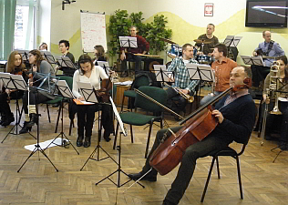
My i soliści w sali obok. Prawie wszyscy w komplecie.
Zaczynamy rozśpiewkę, żeby móc zacząć próbę z orkiestrą.
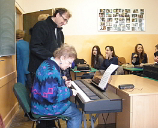 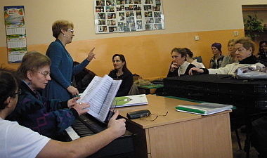
No i oczywiście jak zawsze przychodzą spóźnialscy. Dyrygentka „fuczy”, bo ma chore gardło „ zegarków nie mają?” Chwila zamieszania i dalsza praca.
Dzisiaj nie ma czasu na żarciki, docinki i pogaduchy. Wszyscy to wiedzą i rozumieją, trzeba śpiewać. Jutro ważny dzień, nie możemy dać plamy.
Po rozśpiewce przechodzimy do auli i zaczynamy... ciężką pracę.
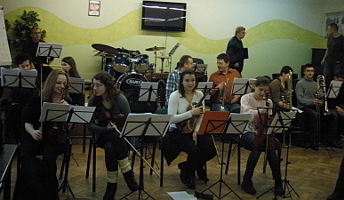 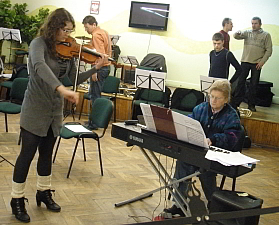
Trzeba zgrać się z orkiestrą. Wszyscy skupieni słuchamy uwag i poleceń.
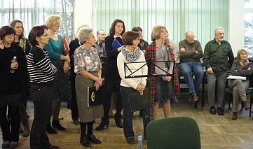 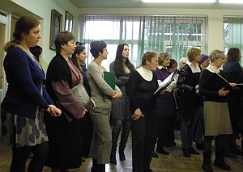
Orkiestra gra my śpiewamy. Wychodzi różnie, raz lepiej raz gorzej a ma być super i bez wpadek. Dyrygentka chora, pot się po niej leje, aż żal na nią patrzeć, ale ona się nigdy nie poddaje, my też. Próba trwa.
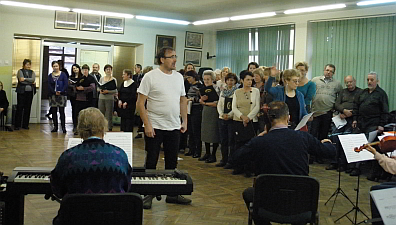
Chwila przerwy, żeby odpocząć i łyknąć herbatki i znowu śpiew.
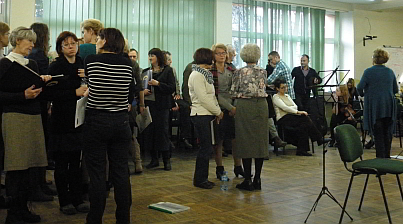 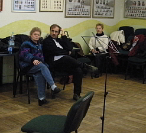
Nie wiadomo, kiedy przeleciało 4 godziny i jest. Wszystko zapięte na ostatni guzik, jeśli chodzi o śpiewanie, ale jeszcze dogranie spraw technicznych, kto, co gdzie zawozi, przywozi, znosi przenosi. No!.... już jest wszystko umówione. Rozchodzimy się z pożegnaniem, do jutra!

© Stowarzyszenie Muzyczne Chór Camerata Wieliczka